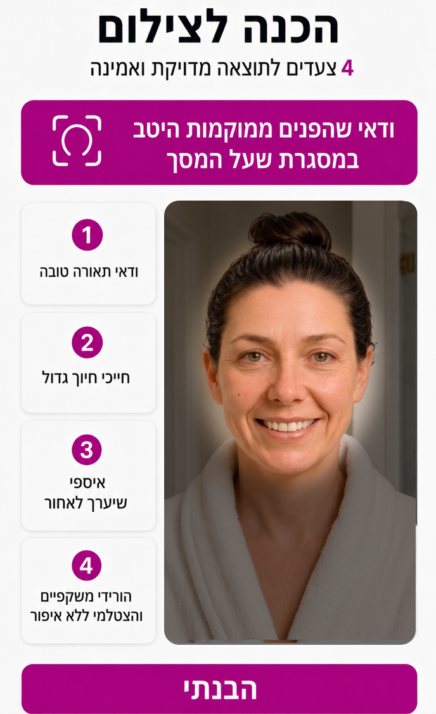
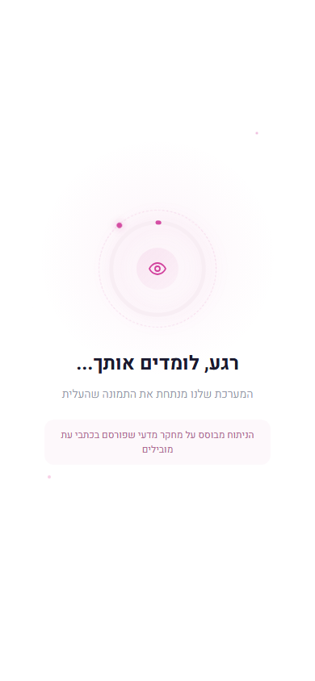
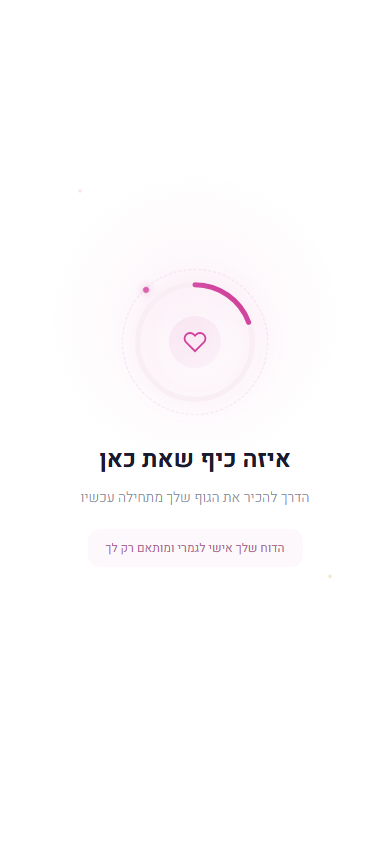

DEMO
9:41
יום שלישי, 3 ביוני
הודעות
עכשיו
מכבי TeleHealth
שלום מיכל, לקראת הפגישה עם ד"ר רונית כהן (8.6, 10:00) במסגרת שירות גיל המעבר, נבקש ממך לבצע מיפוי דיגיטלי קצר. המיפוי ייתן לרופאה רקע מקיף מראש, כך שתוכל להכיר אותך טוב יותר עוד לפני הפגישה.
maccabi.markable.life/start ← לחצי כאן כדי להתחיל
שלום מיכל, לקראת הפגישה עם ד"ר רונית כהן (8.6, 10:00) במסגרת שירות גיל המעבר, נבקש ממך לבצע מיפוי דיגיטלי קצר. המיפוי ייתן לרופאה רקע מקיף מראש, כך שתוכל להכיר אותך טוב יותר עוד לפני הפגישה.
maccabi.markable.life/start ← לחצי כאן כדי להתחיל
לחצי על ההודעה כדי להתחיל את הדמו
מיכל, כדי שהביקור שקבעת יהיה מדויק ויעיל ככל האפשר
נבקש ממך להקדיש כ-7 דקות לתהליך מיפוי קצר. המיפוי ייתן לרופאה רקע מקיף ויבנה בסיס להשוואה בין ביקורים.
שלב 1 · עכשיו
מיפוי קצר, כ-7 דקות
שלב 2 · בין הביקורים
מעקב קל שממשיך לעדכן את הרופאה
אפשר לעצור באמצע ולהמשיך מאותה נקודה. מומלץ במקום שקט ומואר.
מה כולל התהליך:
1
סריקת פנים
סימני עור הנבחנים במחקרים כקשורים לשינויים הורמונליים
2
מיפוי תסמינים
כ-60 תסמינים שעשויים להיות קשורים לפרימנופאוזה ומנופאוזה
3
THINK™ + SENSE™
דגימה קצרה של זיכרון, קשב, ראייה, שמיעה ושיווי משקל
4
החותם ההורמונלי™
כל הנתונים מתחברים לחותם הורמונלי אישי אחד
פלטפורמת בריאות ואיכות חיים. אינה מהווה כלי אבחוני רפואי.
הסכמה מדעת
את עומדת להתחיל תהליך מיפוי קצר. המערכת אוספת מידע מתמונת הפנים שלך, דגימות קוגניטיביות וחושיות, ובונה פרופיל בריאות אישי שתוכלי לשתף עם הרופאה שלך. המידע מעובד על ידי MARKABLE, המספקת את הכלי למכבי, ונשמר רק למשך הזמן הדרוש לטיפול בך. זהו כלי למעקב אישי ותיעוד, לא אבחון רפואי. הנתונים שלך שייכים לך.

שאלון מקדים
בזמן שמעבדים את התמונה שלך...
כמה פרטים שיעזרו לנו ולרופאה להכיר אותך טוב יותר.
מה הגיל שלך? *
האם היה לך דימום וסתי ב-12 החודשים האחרונים? *
כן
לא
סמני כל שינוי שחווית לאחרונה: *
דימום כבד או ממושך
הזעות לילה
מחזור קצר יותר (עד 25 יום)
רגישות, נפיחות או גושים בחזה
מיגרנות חדשות או מוגברות
עלייה במשקל ללא שינוי באכילה או פעילות
שינויי מצב רוח חדשים או מוגברים
יקיצות בלילה
התכווצויות מוגברות
תסמינים אחרים
אין לי אף אחד מהתסמינים הללו


סריקת הפנים הושלמה
זיהינו דפוסים בעור שעשויים להיות קשורים לשינויים הורמונליים. תמונת הפנים נמחקה, ורק מדדי הדפוסים נשמרים לדוח הרופאה.
החותם ההורמונלי שלך
הפרופיל ההורמונלי ימשיך להתעדכן ככל שנאסוף עוד נתונים במהלך התהליך.
מיפוי התסמינים הושלם
הרופאה תקבל תמונה מפורטת של התסמינים שדיווחת, כולל עוצמה ותדירות.
נשאר עוד קצת
עכשיו נדגום זיכרון, קשב ומהירות עיבוד. זה לוקח כ-3 דקות ומרגיש כמו משחק.
דגימת THINK הושלמה
קיבלנו דגימה של זיכרון, קשב ומהירות עיבוד. הנתונים יופיעו בדוח הרופאה.
עוד שלב אחד
דגימת SENSE בודקת ראייה, שמיעה ושיווי משקל. זה לוקח כ-2 דקות.
דגימת SENSE הושלמה
קיבלנו דגימה של ראייה, שמיעה ושיווי משקל. כל הנתונים יועברו לרופאה.
התהליך כמעט הסתיים
עוד רגע תראי סיכום של כל מה שאספנו.
יצירת חשבון
לשמירת התוצאות והמעקב האישי שלך
Secured by Clerk
סיכום המיפוי שלך
הנה מה שמצאנו
לחצי על כל כרטיס לפרטים נוספים. התוצאות יועברו לרופאה שלך.
מה הלאה? הרופאה שלך תקבל דוח מפורט עם כל הנתונים, ותוכל לדון איתך בממצאים בפגישה.
תוצאות אלו משקפות מגמות אישיות ואינן מהוות אבחנה רפואית או תחליף לייעוץ מקצועי.

מיכל, את מוכנה לביקור
המיפוי הושלם. כל הנתונים יחכו לרופאה שלך כשתיכנסי לפגישה.
מה הרופאה תקבל:
פרופיל סימני עור שעשויים להיות קשורים לשינויים הורמונליים
מיפוי תסמינים מדורג
דגימות קוגניטיביות וחושיות
החותם ההורמונלי האישי שלך
הפגישה שלך: 8 ביוני, 10:00
ד"ר רונית כהן, שירות גיל המעבר
ד"ר רונית כהן, שירות גיל המעבר
פלטפורמת בריאות ואיכות חיים. אינה מהווה כלי אבחוני רפואי.
בין הביקורים
6 כלים מבוססי מחקר שמלווים אותך ומייצרים מידע לרופאה שלך
יומן סימפטומים קולי
תיעוד קולי יומי. הנתונים מגיעים לרופאה
STRONG EVIDENCE
מפת מחזור
מעקב דפוס המחזור לסיווג שלב פרימנופאוזה
STRAW+10 STAGING
THINK Daily
אימון קוגניטיבי קצר לחידוד הריכוז והזיכרון
META-ANALYSIS g=0.48
SENSE Balance
תרגילי שיווי משקל למניעת נפילות
COCHRANE, 43 RCTs
PeriIQ
תכנים מותאמים להבנת גיל המעבר
39 STUDIES, 100% QoL
MindShift
CBT מובנה לניהול מצב רוח ושינה
NICE + NAMS LEVEL I
כל כלי מייצר מידע שמגיע אוטומטית לדשבורד הרופאה שלך לפני הביקור הבא.
פלטפורמת בריאות ואיכות חיים. אינה מהווה כלי אבחוני רפואי.
Powered by  © All rights reserved
© All rights reserved